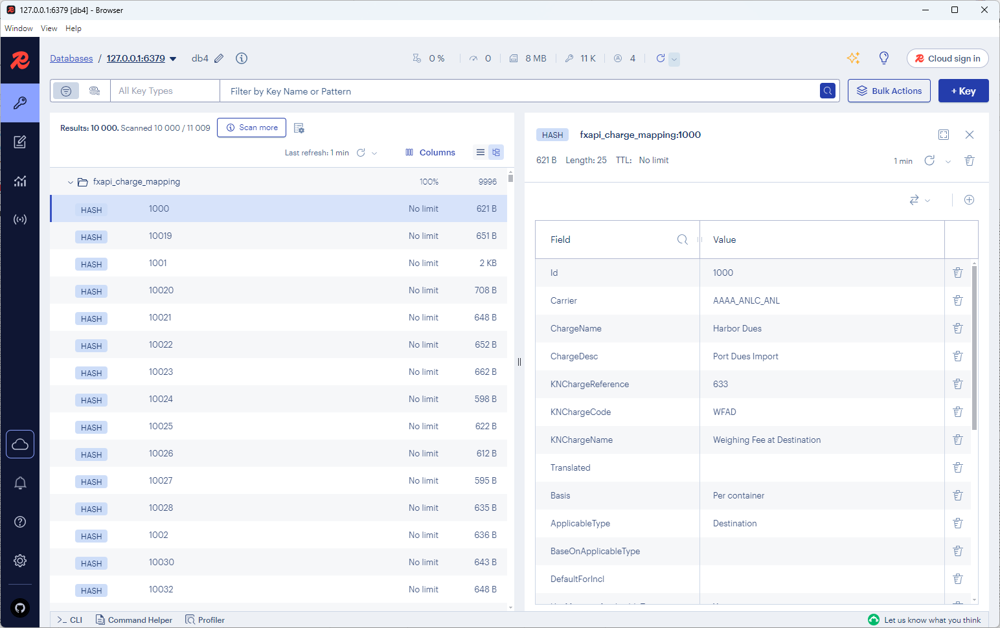
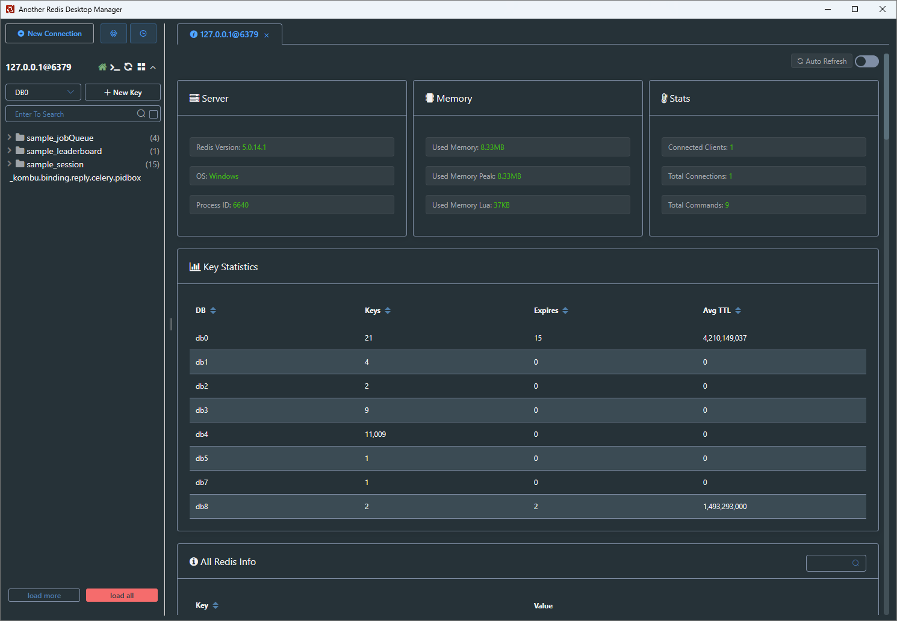

一、Redis是什么？
Redis （Remote Dictionary Server） 是指远程字典服务器，它是一个基于内存的（K/V）存储系统。
- 字典服务器：这里的“字典”指的是数据的组织方式，类似于字典中的键值对结构。服务器则是指提供数据存储和检索服务的程序。
- 远程：表示这个服务器可以被远程访问，即客户端可以通过网络连接到服务器，进行数据的读写操作。
- 基于内存：Redis将数据存储在内存中，这意味着它能够提供非常快的读写速度，但同时也意味着数据在服务器重启后会丢失，除非进行持久化操作。
- 键值（K/V）存储系统：Redis存储数据的基本单位是键值对，其中键是唯一的标识符，值可以是字符串、哈希、列表、集合等数据结构。
经典应用场景：
- 缓存热点数据（减轻 MySQL 压力，响应速度从毫秒级→微秒级）
- 实现分布式锁（解决多服务并发问题）
- 存储实时信息（网页访问量、API访问量）
- 处理消息队列（简单场景替代 RabbitMQ）
二、Redis基础操作
1. 核心通用命令
| 命令 | 作用 | 示例 |
|---|---|---|
set key value |
设置一个 String 类型的键值对 | set name zhangsan |
get key |
获取指定 key 的值 | get name → 返回 "zhangsan" |
del key [key ...] |
删除一个或多个键 | del name age |
exists key [key ...] |
判断一个或多个键是否存在 | exists name → 返回 1 (存在) 或 0 (不存在) |
expire key seconds |
为键设置秒级过期时间 | expire name 30 (30 秒后失效) |
ttl key |
查看键的剩余过期时间（秒） | ttl name → 返回剩余秒数, -1 (永不过期), -2 (已过期) |
type key |
查看键存储的值的类型 | type name → 返回 "string", "list", "hash" 等 |
keys pattern |
查找所有符合模式的键（慎用） | keys user:* (会阻塞服务器, 生产环境禁用) |
scan cursor [MATCH pattern] |
迭代数据库中的键（生产推荐） | scan 0 MATCH user:* COUNT 100 (安全遍历) |
2. 五种核心数据结构
（1）String（字符串）
- 简介：最基础的数据类型，可以存储任何形式的字符串，包括文本、序列化的 JSON、甚至是二进制数据（如图片）。单个 value 最大可达 512MB。除了基本的存取，它还支持原子性的计数操作，非常适合用于实现计数器功能。
- 用途：API 请求次数统计、缓存用户信息（JSON 字符串）
- 示例：
# 缓存用户信息（JSON字符串），并设置1小时过期
setex user:1001 3600 '{"name": "zhangsan", "age": 25}'
# 获取用户信息
get user:1001
# 记录API访问次数
incr api:requests
（2）Hash（哈希）
- 简介：一个键值对集合，本身也是一个 key。非常适合用于存储一个对象的多个字段，例如用户信息、任务详情等。相比将整个对象序列化为 JSON 字符串存入 String，Hash 可以让你只更新对象的单个字段，效率更高。
- 用途：缓存用户或任务的详细信息
- 示例：
# 缓存任务T001的详情
hset task:T001 title "ProcessInFX" status "In Progress" priority "High"
# 获取任务T001的状态
hget task:T001 status
# 更新任务T001的状态
hset task:T001 status "Done"
# 获取任务T001的所有详情
hgetall task:T001
（3）List（列表）
- 简介：一个字符串元素的有序集合，按照插入顺序排序。非常适合用作消息队列、存储最新的 N 个项目（如最新动态）。
- 用途：简单消息队列（FIFO），如异步邮件通知队列
- 示例：
# 1. 生产者：向邮件通知队列中加入3个任务
# 执行后，列表为 ["task3", "task2", "task1"]
lpush email:queue "task1" "task2" "task3"
# 2. 消费者：从队列右侧取出一个任务处理（先进先出）
# 返回 "task1"，列表变为 ["task3", "task2"]
rpop email:queue
# 3. 查看队列中剩余的任务
lrange email:queue 0 -1
# → 1) "task3"
# → 2) "task2"
（4）Set（集合）
- 简介：一个无序且唯一的字符串集合。非常适合用于去重、存储标签、跟踪独立访客等。支持交集、并集、差集等操作。
- 用途：计算两个用户的共同好友、存储文章标签、统计每日独立访客 IP
- 说明：以“计算共同好友”为例，我们可以将每个用户的好友列表存储在一个 Set 中。由于 Set 自动去重，可以保证好友列表的唯一性。然后，通过
sinter命令，可以瞬间计算出两个用户共同关注的人，无需在数据库层面进行复杂的JOIN查询。 - 示例：
# 1. 为用户 u01 和 u02 添加好友
sadd user:u01:friends "A" "B" "C" "D"
sadd user:u02:friends "C" "D" "E" "F"
# 2. 查看 u01 的所有好友
smembers user:u01:friends
# 3. 查看 u01 和 u02 的共同好友
sinter user:u01:friends user:u02:friends
# → 1) "C"
# → 2) "D"
（5）Sorted Set（有序集合）
- 简介：类似于 Set，但每个成员都关联一个分数（score），并根据这个分数进行排序。非常适合用于排行榜、优先级队列、带权重的任务调度。
- 用途：实现任务执行耗时排行榜
- 说明：当一个后台任务完成时，我们可以记录其执行耗时，并将其作为分数，任务 ID 作为成员，存入一个 Sorted Set。这样就可以随时获取执行最慢的 Top 10 任务，用于性能分析和优化。
- 示例：
# 1.新增/更新任务耗时
zadd task:duration 800 task001 1200 task002
# 2.查询Top10最耗时任务
zrevrange task:duration 0 9 WITHSCORES
# 3.查询某任务的具体耗时
zscore task:duration task001
三、Redis 的持久化
Redis 是内存数据库，但它提供了两种主要方式将数据持久化到硬盘，以防止服务器重启后数据丢失。
-
RDB (Redis Database)：在指定的时间间隔内，将内存中的数据集快照写入一个二进制文件中。
-
优点：恢复速度快，文件紧凑，适合做冷备份。
- 缺点：如果 Redis 意外宕机，会丢失最后一次快照之后的所有修改。
-
AOF (Append Only File)：以日志的形式记录每一个写操作。Redis 重启时会重新执行 AOF 文件中的命令来恢复数据。
-
优点：数据安全性更高，丢失数据的风险极小。
- 缺点：文件体积通常比 RDB 大，恢复速度相对较慢。
混合持久化：Redis 4.0 之后支持混合使用 RDB 和 AOF，结合了两者的优点，兼顾了快速恢复和数据安全，是目前推荐的方式。
四、Redis 键命名规范
良好的命名规范是高效使用和维护 Redis 的基石。一个清晰的命名约定可以极大地提高代码的可读性，并方便问题排查。
-
推荐格式：
项目名:业务名:唯一标识 -
使用冒号
:进行分层，这在很多 Redis 可视化工具中会被识别为文件夹结构，方便浏览。 - 键名应简短且具有描述性。
-
示例：
-
缓存用户信息：
fxap2.0:user:1001 - API 调用计数器：
fxwebapi:api_calls:fxusage:post - 分布式锁：
lock:run_query:query_id
五、Redis 可视化工具推荐
选择一款好的可视化工具可以极大地提升开发和运维效率。以下是几款主流的 Redis GUI 工具：
-
RedisInsight
-
简介：Redis 官方出品的免费可视化管理工具，界面现代化，功能强大。
- 特点：支持核心数据结构、流、图、JSON 等高级数据类型的可视化；内置 CLI 和性能分析工具。
- 平台：Windows, macOS, Linux
- 官网：https://redis.com/redis-enterprise/redis-insight/

-
Another Redis Desktop Manager
-
简介：一款快速、稳定、跨平台的开源 Redis 桌面管理工具，广受开发者欢迎。
- 特点：界面简洁直观，支持 SSH 隧道连接，支持暗黑模式，响应速度快。
- 平台：Windows, macOS, Linux
- 官网：https://github.com/qishibo/AnotherRedisDesktopManager

六、学习资源推荐🚀️
Redis 下载：Redis官网
Reids 官方可视化工具：Redis Insight
Redis 官方命令手册：https://redis.io/docs/latest/commands/